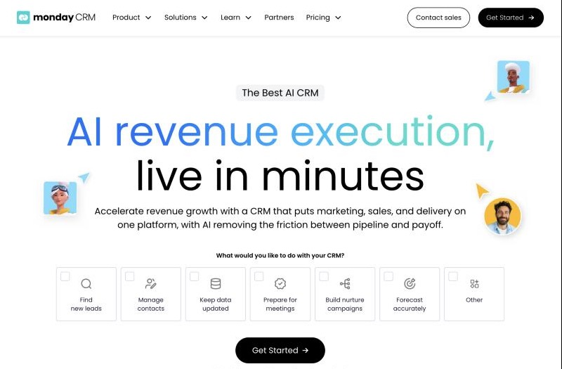
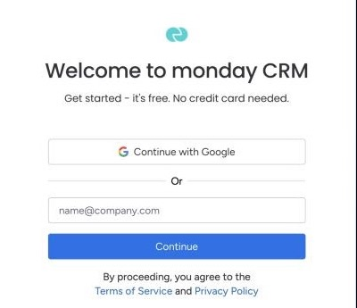
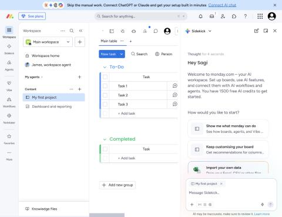
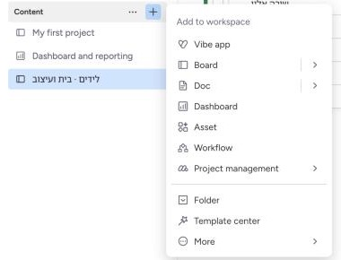
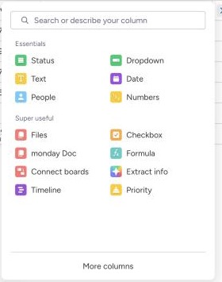
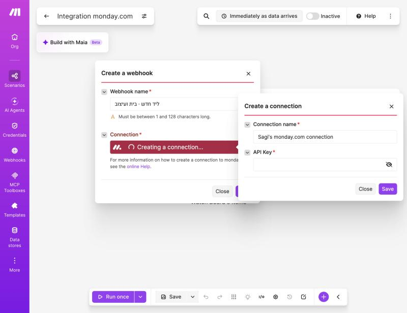

לפני שמתחילים
מה זה monday CRM, ולמה צריך חשבון
monday.com היא פלטפורמה לניהול עבודה שנראית כמו גיליון: לוחות, שורות ועמודות. monday CRM הוא המוצר שלה לניהול לקוחות ומכירות: לידים, אנשי קשר, עסקאות וצינור מכירות. במפגש 5 נחבר אותו ל-Make, ו-Claude Haiku ינתח כל ליד חדש, יכתוב חזרה ללוח וינסח לו מייל אישי.
- 💳 כמה זה עולה
ניסיון חינמי של 14 יום עם גישה מלאה, בלי כרטיס אשראי (כך כתוב בדף ההרשמה). אחרי זה צריך תוכנית בתשלום, או לעבור לתוכנית החינמית הכללית של monday, שמוגבלת יותר. - 📅 מתי לפתוח
קרוב למפגש 5 — יום-יומיים לפני. כך הניסיון יחזיק גם את המפגש וגם את שבוע התרגול שאחריו. - 🧰 מה צריך מראש
חשבון Google או אימייל שאפשר לפתוח עכשיו, חשבון Make פעיל (מדריך ההרשמה ל-Make), וכ-20 דקות.
שלב 1
כניסה לאתר ולחיצה על Get Started
- גשו לכתובת
monday.com/crm - אם קופץ חלון עוגיות: Accept necessary cookies only מספיק
- לחצו על הכפתור השחור Get Started (במרכז הדף או בפינה העליונה). אפשר לסמן קודם מה תרצו לעשות עם ה-CRM, למשל Find new leads — זה לא חובה

שימו לב: monday CRM, לא monday work managementל-monday יש כמה מוצרים. הכתובת
monday.com/crm פותחת את מוצר ה-CRM. אם נרשמתם דרך דף הבית הכללי, תקבלו את מוצר ניהול העבודה — גם הוא יעבוד לתרגילים, אבל עם פחות כלי מכירות.שלב 2
בחירת דרך ההרשמה
- Continue with Google — הכי מהיר. בוחרים חשבון Google, מאשרים, ונכנסים. אין סיסמה חדשה לזכור.
- אימייל — מקלידים כתובת בשדה name@company.com ← Continue, ובוחרים סיסמה. monday ישלח מייל אימות.

כבר יש לכם חשבון monday?לחצו Log in בתחתית. אפשר להוסיף את מוצר ה-CRM לחשבון קיים, או לפתוח חשבון נפרד לקורס עם כתובת אחרת — כך הניסיון לא יתערבב עם העבודה.
שלב 3
שאלות ההיכרות
אחרי ההרשמה monday שואל כמה שאלות קצרות: על מה תעבדו, תפקיד, גודל הצוות, ולפעמים שם לחשבון. אין תשובה לא נכונה — ענו בקצרה.
- שם החשבון
למשל בית ועיצוב או השם שלכם. הוא יופיע בכתובת (השם-שלכם.monday.com). - הזמנת חברי צוות
דלגו (Skip / Remind me later). לקורס לא צריך צוות. - תבניות ולוחות לדוגמה
אפשר לקבל אותם, אבל בשלב 5 נבנה לוח משלנו מאפס.
שלב 4
המסך הראשון: איפה מה

- Workspace · סביבת עבודה שמכילה לוחות. אצלנו: Main workspace.
- Board · לוח · טבלה אחת. כל לוח מופיע בסרגל הצד.
- Item · פריט · שורה בלוח. אצלנו: ליד אחד.
- Column · עמודה · שדה עם סוג: טקסט, אימייל, סטטוס, מספר.
- Group · קבוצה · קבוצת שורות בתוך לוח, למשל "לידים חדשים".
- Update · עדכון · הערה על פריט, כמו צ'אט. בבועה ליד שם הפריט.
Sidekick אוכל קרדיטיםSidekick הוא ה-AI של monday. הוא יכול לבנות לוח מפרומפט, אבל משתמש בקרדיטי AI של monday. בהכנה שלנו, אחרי בניית לוח ו-3 פריטים, נשארו 57 קרדיטים. בנייה ידנית (שלב 5) לוקחת כמה דקות ולא עולה כלום.
שלב 5
בונים את לוח הלידים
- בסרגל הצד: + ליד Content ← Board ← שם: לידים · בית ועיצוב
- משנים את שם הקבוצה הראשונה ל-לידים חדשים (לחיצה על השם)
- משנים את שם העמודה הראשונה (Item) ל-שם הליד: לחיצה כפולה על הכותרת
- מוסיפים עמודות עם + בסוף שורת הכותרות. בוחרים סוג לכל עמודה לפי הטבלה
- בעמודות מסוג Status: שלוש הנקודות בכותרת ← Settings ← Customize Status column ← כותבים את התוויות


| עמודה | סוג | תוויות / הערה |
|---|---|---|
| סטטוס | Status | ליד חדש · נוצר קשר · מתאים · לא מתאים |
| אימייל | ||
| טלפון | Phone | |
| מוצר מבוקש | Text | |
| מקור | Dropdown | אתר · פייסבוק · אינסטגרם · המלצה |
| הודעה | Long text | |
| נושא | Text | ימולא ע"י Make |
| דחיפות | Status | נמוכה · בינונית · גבוהה — בדיוק כך |
| ציון | Numbers | ימולא ע"י Make |
| סיכום AI | Long text | ימולא ע"י Make |


באימייל — הכתובת שלכםבלידים לדוגמה כתבו בעמודת האימייל את הכתובת שלכם עם
+ (למשל you+noa@gmail.com). המיילים שהאוטומציה תנסח יגיעו אליכם, ולא לאף אחד אחר.שלב 6
טוקן API: המפתח של Make ל-monday
- לחצו על תמונת הפרופיל בפינה ← Developers (נפתח בלשונית חדשה)
- בתפריט: My access tokens ← Show ← Copy
- אל תשמרו אותו בקובץ פתוח. מדביקים אותו פעם אחת ב-Make (שלב 7), ושם הוא נשמר

הטוקן הוא סיסמהמי שמחזיק אותו יכול לקרוא, לשנות ולמחוק את כל הלוחות שלכם. לא שולחים אותו בוואטסאפ, לא מדביקים בצ'אט (גם לא בצ'אט עם AI), ולא מצלמים. דלף? באותו מסך: Regenerate. הישן מפסיק לעבוד מיד, ומדביקים את החדש בחיבור ב-Make.
שלב 7
חיבור monday ל-Make
- ב-Make: Create scenario ← + ← מחפשים monday ← monday.com
- בוחרים מודול כלשהו, למשל Watch Board's Items (הגרסה בלי התווית Instant)
- ליד Connection: Add ← מדביקים את הטוקן בשדה API Key ← Save
- פותחים את Board ID: אם רואים ברשימה את לידים · בית ועיצוב — החיבור עובד ✓

זהו — monday מחובר ל-Make 🎉מכאן ממשיכים בתרגיל 1 בדף התרגול של מפגש 5: טריגר שמזהה ליד חדש.
תקלות נפוצות
אם משהו נתקע
- monday מחזיר אותי למסך ההתחברות שוב ושוב
קרה לנו בדפדפן מוגבל, אחרי רענון. התחברו מחדש עם Google או אימייל (לא בכפתור "כבר מחובר"), ואחרי שנכנסתם — עברו בין לוחות בלחיצות, בלי לרענן. - ב-Make לא מופיע הלוח ברשימה
בדקו שהדבקתם את הטוקן של החשבון הנכון, ושהלוח לא נמחק. לחצו על אייקון הרענון ליד הרשימה. - הכפתור Automate נעול
האוטומציות המובנות של monday מוגבלות בתוכנית החינמית. בניסיון של monday CRM הן פתוחות. בקורס עיקר העבודה ב-Make, כך שזה לא חוסם. - הניסיון נגמר
הלוחות שלכם נשארים. לפי תגובה של צוות monday בפורום המפתחים, הטוקן ממשיך לעבוד גם אחרי סוף הניסיון אם החשבון עובר לתוכנית החינמית — אבל זה לא נבדק אצלנו עם Make. אם משהו מפסיק לעבוד, בדקו קודם את החיבור ב-Make. - הטוקן דלף או הודבק בטעות
Developers ← My access tokens ← Regenerate, ואז מעדכנים את החיבור ב-Make (Credentials בסרגל של Make). - נגמרו קרדיטי ה-AI של monday
הם רק ל-Sidekick ולכלי ה-AI של monday. ה-AI בקורס הוא Claude Haiku דרך Make, והוא לא משתמש בקרדיטים של monday.